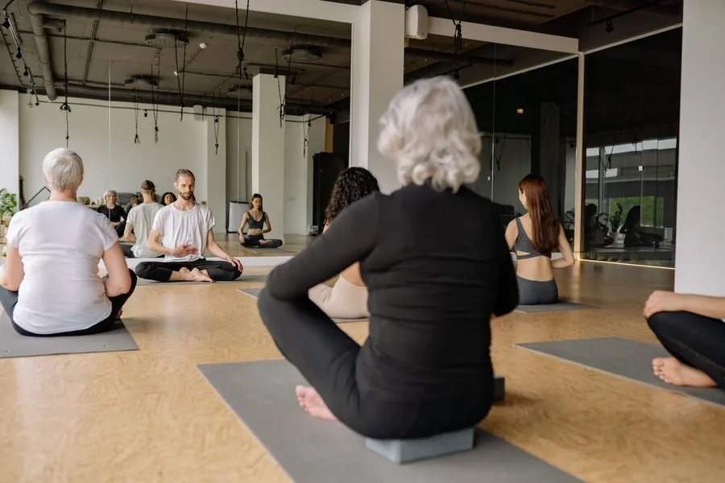
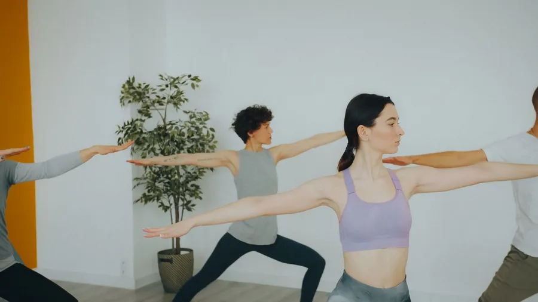
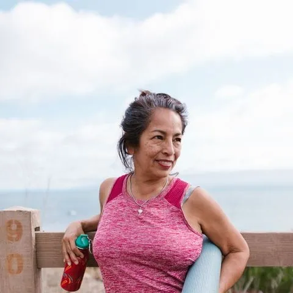
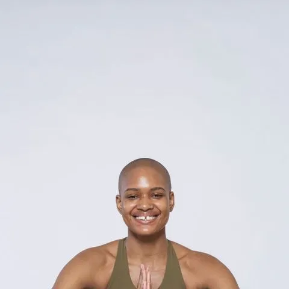

Take one breath first.
Stillwater is a yoga and pilates studio in Brighton. Twenty-one classes a week, small groups, and teachers who remember your name. Here is what is on.
Today at Stillwater




Nothing to prepare. Just come.
Before
Come early. We show you around, find you a mat, blocks and a blanket, and nobody minds if it is your first time.
During
Follow at your own pace. Every pose has a gentler option, and resting is always allowed. The room is warm and softly lit.
Afterwards
A long rest to finish, then tea in the lounge if you have time. Most people stay longer than they planned.
Kind, curious, experienced.
Meet everyoneElias Grant
Yin and meditation teacher. Yin, Meditation.

Jo Whitaker
Pilates and mobility teacher. Pilates, Mobility.
Maya Sol
Founder and lead teacher. Vinyasa, Power Vinyasa.

Priya Anand
Beginners and prenatal teacher. Hatha, Prenatal.
“I walked in stressed and wired. An hour later I walked out lighter, and I’ve been back every week since.”
Hannah, member since 2023
Your first class is half price.
Just £7 for any class this month. No commitment, no pressure.